Nếu như chợ Đồng Xuân là nét văn hóa của Hà Nội thì chợ Bến Thành chính là một trong nét đặc sắc của Sài Gòn mà khi nhắc đến ai cũng sẽ nhớ đến đầu tiên. Thật sự sẽ là một điều tiếc nuối lớn khi đặt chân đến đây mà bạn bỏ lỡ chợ Bến Thành.

Chợ Bến Thành quận 1 – biểu tượng của thành phố Hồ Chí Minh
Cùng VNTRIP.VN khám phá xem khu du lịch gần Sài Gòn có những gì thu hút và nổi tiếng nhé!.
I. Địa chỉ chợ Bến Thành Sài Gòn
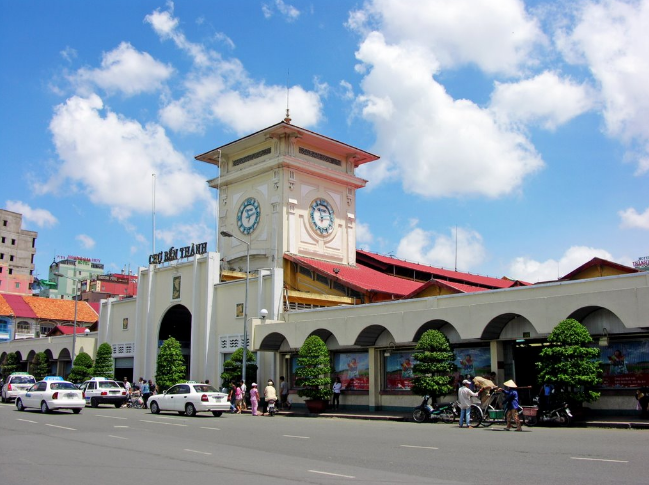
Chợ Bến Thành thành phố Hồ Chí Minh từ một góc độ khác
Chợ Bến Thành nằm ở Cửa Nam – nơi giao cắt giữa các con đường Phan Bội Châu, Phan Chu Trinh, Lê Thánh Tôn và công trường Quách Thị Trang, phường Bến Nghé, quận 1 và là ngôi chợ lâu đời nhất tại đây. Biểu tượng nổi bật nhất của chợ chính là hình ảnh đồng hồ ở ngay cửa nam của ngôi chợ tựa như đồng hồ Big Ben ở London.
II. Nguồn gốc và xuất xứ tên gọi ?
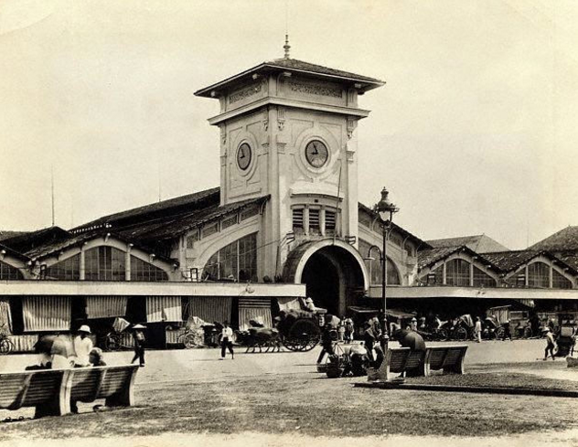
Hình ảnh chợ Bến Thành Sài Gòn năm 1943
Chợ có lịch sử hình thành từ đầu thế kỷ 17, lúc đó chợ nằm gần sông Sài Gòn và là nơi mua bán của các tiểu thương. Đến thời kỳ kháng chiến chống Pháp, chợ nằm bên bờ sông Bến Nghé, bến này dùng để phục vụ cho khách vãng lai và quân nhân vào thành. Vì vậy, chợ có tên là Chợ Bến Thành.
III. Chợ Bến Thành có gì đẹp ?
Với diện tích trên 13.000m2, chợ bán bán chủ yếu các mặt hàng quần áo, vải sơi, giày dép, thời trang, hàng thủ công mỹ nghệ, thực phẩm tươi sống, trái cây và hoa tươi. Ngoài ra, chợ còn rất phong phú với các quán ăn vặt, món ăn đậm chất các vùng ở miền Nam.
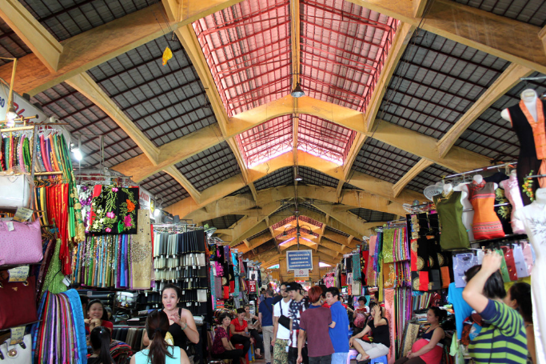
Du lịch chợ Bến Thành tp. Hồ Chí Minh
Len lỏi giữa các gian hàng, du khách chắc chắn sẽ choáng ngợp với sự đa dạng mặt hàng ở đây. Bạn có thể dễ dàng tìm cho mình những món đồ ưng ý từ những quà lưu niệm bé tí như vòng cổ, hoa tai, ví, khăn,… đến những trang phục truyền thống hay cặp sách,…
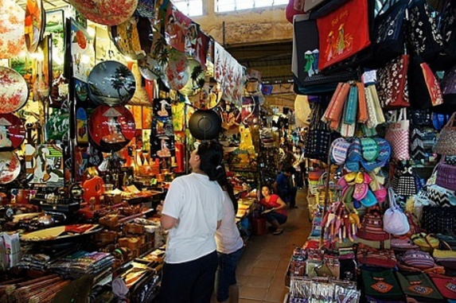
Hình chợ bến thành tại khu bán đồ lưu niệm
IV. Ăn gì ở chợ Bến Thành?
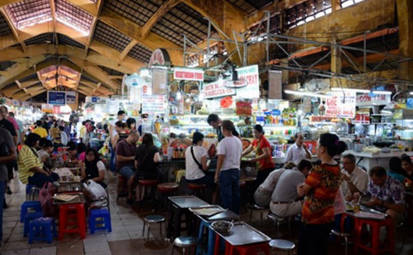
Khu ăn uống thu hút khách du lịch của chợ Bến Thành
Không quên nhắc đến ẩm thực đa dạng và phong phú của chợ Bến Thành. Chè Sài Gòn chắc hẳn không còn lạ với người dân khắp các vùng miền, đến với chợ, bạn sẽ choáng ngợp với hàng dài các sạp chè đủ mọi màu sắc từ màu xanh của cốm, màu vàng của chuối, ngô, màu trắng của nước cốt dừa, màu tím của khoai môn, màu đỏ của sương sa hạt lựu,… Và đặc biệt, ở cổng số 7 có 1 quán chè hơn 40 năm chuyên về các món chè Nam Bộ.
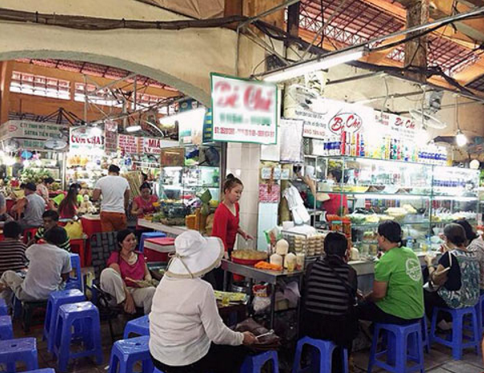
Quán chè hơn 40 năm tại cổng số 7 chợ Bến Thành (ảnh ST)
Các món ăn chính phải kể đến cơm tấm, cơm sườn, bún mắm, bún riêu, gỏi cuốn, bún thịt nướng, xôi bảy màu. Các món ăn vặt thì vô vàn như bánh tráng trộn, bánh bèo Huế, các món ốc, bánh bột,…
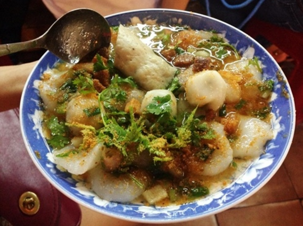
Món bánh bèo thơm ngon
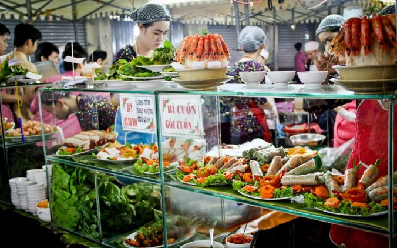
Tham quan chợ Bến Thành thưởng thức đặc sản Gỏi Cuốn (Ảnh ST)
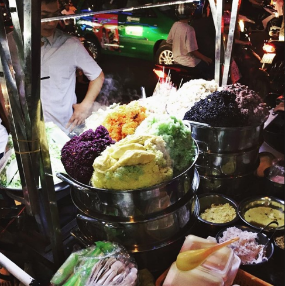
Xôi ngũ sắc hấp dẫn thực khách tại chợ Bến Thành (Ảnh ST)
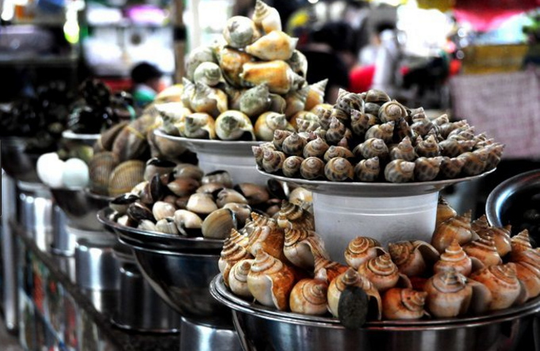
Món ốc đa dạng và phong phú tại chợ Bến Thành
V. Chợ Bến Thành về đêm
“Rực rỡ – Nhộn nhịp” là những gì có thể thấy ở chợ Bến Thành khi trăng lên. Dường như đây mới là thời điểm “sống thật” của khu chợ này. Nhiều hoạt động giao thương, nhiều khách du lịch và người dân địa phương tham quan, thưởng thức các món ăn, sẵn sàng sống với một “Sài Gòn thứ 2” – Sài Gòn về đêm.
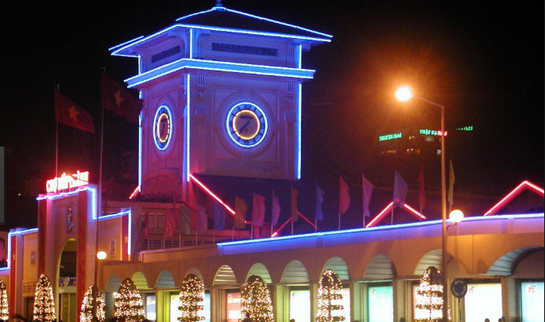
Hình ảnh chợ Bến Thành về đêm
Nếu nhắc đến Sài Gòn là nhắc đến sự náo nhiệt, sống nhanh thì cần phải cảm nhận và hiểu rõ hơn rằng: cái nhanh của ban ngày là công việc, sự lo toan cuộc sống và cái nhanh của ban đêm chính là màu sắc của những bữa tiệc.
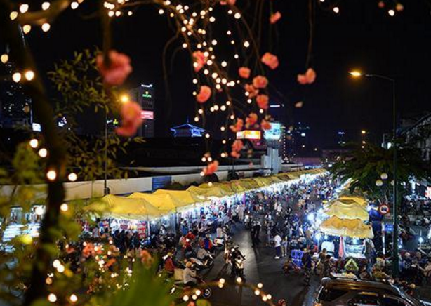
Khu dãy chợ đêm tấp nập của chợ Bến Thành
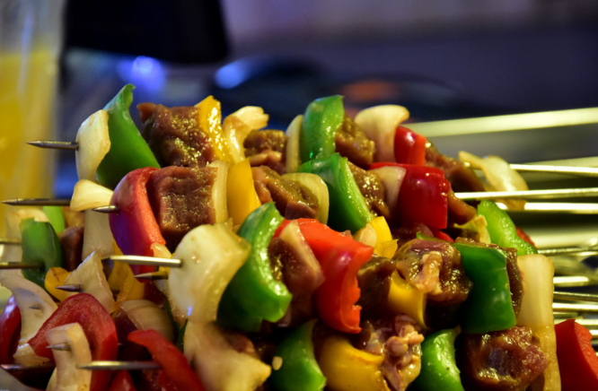
Thịt xiên – món ăn phổ biến tại chợ đêm Bến Thành
Nếu cảm nhận được trọn vẹn 2 sắc thái đó của Sài Gòn, hẳn bạn đã có rất nhiều năm tháng tuyệt vời tại đây.
VI. Lưu ý nho nhỏ
Đường sá Sài Gòn lúc nào cũng tấp nập người xe qua lại, nên bạn hãy chú ý quan sát khi đi qua đường. Vào những thời điểm đông người hãy cẩn thận túi của mình để tránh bị móc trộm hay cướp giật nhé.
Dù nhịp điệu của Sài Gòn rất nhanh nhưng đừng vội vã, hãy đến và cảm nhận từ từ, bắt đầu từ chợ Bến Thành, bắt đầu từ những điều thân thuộc nhất của nơi đây. Và bạn sẽ thấy vẻ đẹp sâu lắng của Sài Gòn đang ẩn mình chờ bạn tìm kiếm đằng sau những nốt nhạc vội vã kia!